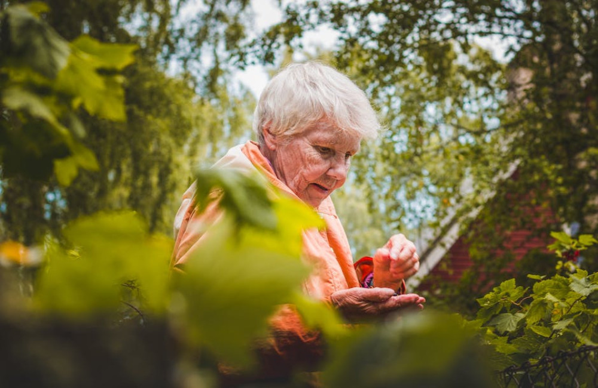

Uitstapjes en evenementen
Wij organiseren regelmatig uitstapjes naar musea, parken of culturele evenementen. Deze momenten brengen plezier, nieuwe ervaringen en versterken de band tussen deelnemers.
Elke dag bij MENZ staat in het teken van ontmoeting, plezier en persoonlijke aandacht. Met creatieve activiteiten, beweging en gezamenlijke momenten creëren we een warme en vertrouwde sfeer.
In onze creatieve sessies ontdekken ouderen nieuwe talenten en halen zij plezier uit tekenen, handwerken of koken. We bieden begeleiding op maat, zodat iedereen op eigen tempo kan meedoen. Tradities en culturele invloeden krijgen ruimte in het programma, waardoor deelnemers zich herkennen en gewaardeerd voelen. Samen werken we aan schilderijen, handwerken of culinaire gerechten die zorgen voor trots en voldoening. Creatieve activiteiten brengen ontspanning, zelfexpressie en versterken het onderlinge contact. Dit maakt de dag betekenisvol en draagt bij aan een gevoel van saamhorigheid en verbondenheid.
Beweging is een vast onderdeel van ons programma, met activiteiten zoals gymnastiek, wandelingen en lichte sportvormen. Door spelmomenten en groepsactiviteiten bevorderen we niet alleen de fysieke gezondheid, maar ook het sociale contact. Iedereen doet mee op eigen niveau, onder begeleiding die veiligheid en plezier waarborgt. Buitenactiviteiten, zoals wandelingen in de buurt, zorgen voor frisse lucht en ontspanning. Binnen spelen we spelletjes die het geheugen prikkelen en samenwerking stimuleren. Het samenspel zorgt voor energie, plezier en nieuwe vriendschappen. Zo draagt beweging niet alleen bij aan gezondheid, maar ook aan een positief en actief dagritme.
Wij organiseren regelmatig uitstapjes naar musea, parken of culturele evenementen. Deze momenten brengen plezier, nieuwe ervaringen en versterken de band tussen deelnemers.
Samen eten, koffiemomenten en gesprekken geven structuur aan de dag. Deze momenten zijn waardevol om elkaar beter te leren kennen en sociale contacten te verdiepen.
Bekijk onze korte video’s om een indruk te krijgen van de dagelijkse sfeer, activiteiten en verbondenheid bij MENZ.